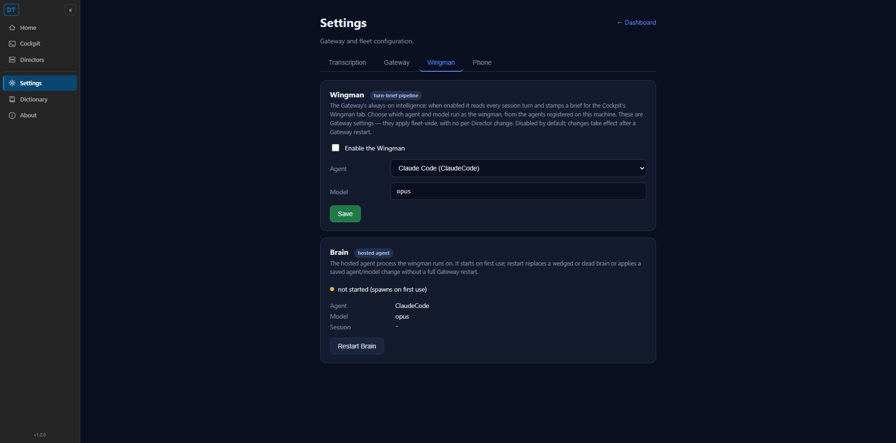
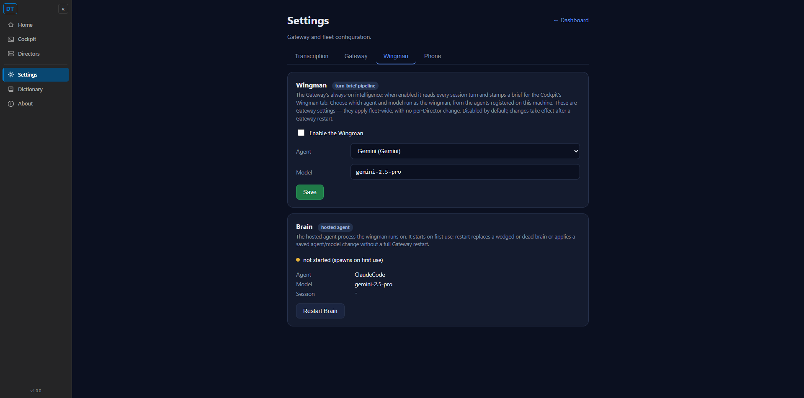

[Wingman] Settings: rename Tool to Agent and list every agent registered on this machine
PR #522, branch issue-510-wingman-agent-picker. This is an INDEPENDENT re-verification of the
WHOLE issue after the issue was bounced once for a "saved model not shown on reload" defect (criterion 3).
The QA Agent did NOT trust the developer's report or the developer's mock proof server
(proof_server.py); it booted the REAL GatewayHost from the PR build on an isolated
CC_DIRECTOR_ROOT seeded with four registered agents, ran the REAL Cockpit web app against it,
and drove the page in a real browser.
D:\ReposFred\dt-qa-510 on origin/issue-510-wingman-agent-picker (HEAD d6d6a7f).GatewayHost booted in-process on http://127.0.0.1:7901 against an isolated root
(%TEMP%\qa510-root) holding four enabled agents: Claude Code, Codex, Gemini, Pi.CcDirector.Cockpit) served through the Gateway front door so the
browser origin matches production (one-URL plan).| # | Criterion | Expected | Actual (observed) | Result |
|---|---|---|---|---|
| 1 | Wingman tab shows label "Agent"; "Tool" no longer appears there. | Field label reads "Agent". | Live DOM: <label for="brainagent">Agent</label>. No <label>Tool</label>
anywhere on the page. Screenshot 01. |
PASS |
| 2 | Agent dropdown lists every agent registered on this machine (more than one when more than one is registered). | Dropdown lists all registered agents (>1). | Live dropdown rendered 4 options: Claude Code (ClaudeCode), Codex (Codex), Gemini (Gemini), Pi (Pi).
Matches the seeded machine agent list. Real Gateway GET /gateway/settings returned
brain.agents with the same 4 entries. Screenshot 01. |
PASS |
| 3 | (Previously failing) Choosing an agent AND a model, saving, reloading shows BOTH the saved agent AND the saved model. Tested with a non-default model. | After save + full page reload, the dropdown pre-selects the saved agent and the Model field shows the saved model. | Selected Gemini + typed gemini-2.5-pro, clicked the real Save button
("Saved Gemini (Gemini) + gemini-2.5-pro."). After a FULL page reload, the dropdown pre-selected
Gemini (Gemini) and the Model field showed gemini-2.5-pro.
Confirmed via live DOM and via GET /gateway/settings returning
agentId=33333333... and model=gemini-2.5-pro. Screenshot 02. |
PASS |
| 4 | Saved choice written to the gateway config (config.json + settings response). | config.json carries the saved agent id, kind, and model. | After the UI save, config.json on disk held
brain_agent_id=33333333-3333-3333-3333-333333333333,
brain_tool=Gemini, brain_model=gemini-2.5-pro. |
PASS |
c5c3cb7 [Desktop] Add Cursor CLI agent provider (#517/#521), so a naive
git diff main..HEAD shows Cursor files as "deleted". Verified this is NOT the PR's doing:
the branch's own commits (since the merge-base) touch only the wingman picker files and proof images,
never AgentKind.cs or any Cursor file. A trial merge of the PR onto current main was
automatic/clean and PRESERVED the Cursor agent while applying the wingman picker changes.dotnet build cc-director.sln
— Build succeeded, 0 Error(s), 0 Warning(s).BrainConfigEndpointTests —
6/6 passed, including Put_brain_config_by_agent_id_persists_and_round_trips (the criterion-3
round-trip) and the no-fallback rejection of an unknown agent id.gemini-2.5-pro round-trips across a full page reload).
Clean merge onto main with Cursor preserved; clean merged build.
